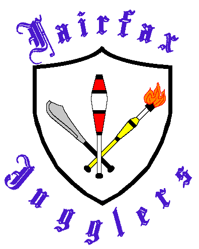

|
Fairfax Jugglers
Welcome to the online home of the Fairfax Jugglers!!
The Fairfax Juggling Club typically meets weekly in Fairfax County, Virginia.
The club is open to jugglers of all skill levels, from beginners to professionals.
If you don't know how to juggle, we'll happily teach you. If you do know how to juggle, come out and play!
The juggling toys range from the standard balls and clubs to rings, devil sticks, diablos, ropes,
tops, unicycles, cigar boxes, and anything else we can come up with. There tends to be a fair amount of
club passing, as throwing things at other people is a nice way to wind down the day
(keeping in mind, of course, that they throw things back!). So come out and join us!
|